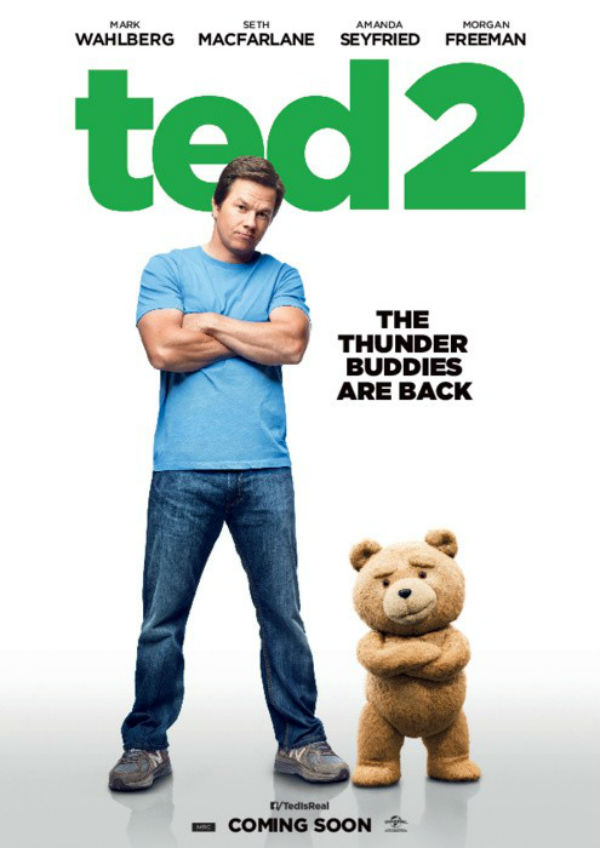

Sinopese
Completamente apaixonado, Ted (voz de Seth MacFarlane) decide se casar com Tami-Lynn (Jessica Barth). Entretanto, não demora muito para que o casal entre em crise. Querendo evitar um possível divórcio, Ted resolve ter um filho. Tami-Lynn logo fica empolgada com a ideia, o que faz com que o casal inicie uma busca sobre quem poderia ser o doador de esperma ideal para o bebê. Seu grande amigo John (Mark Wahlberg) o ajuda na tarefa, mas logo Ted descobre que não pode ter um filho porque, legalmente, ele não é uma pessoa, e sim uma propriedade. Começa então uma batalha judicial em que o urso de pelúcia tenta provar que merece ser considerado um cidadão como qualquer outro ser humano.